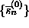
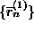
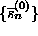
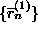
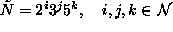
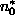
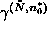
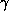

The workhorse for the generation of surrogate data within the TISEAN package is the program surrogates. It implements the iterative Fourier based scheme introduced in Ref. [30] and discussed in Sec. 4.3. It has been extended to be able to handle multivariate data as discussed in Sec. 4.6. An FFT routine is used that can handle data sets of N points if N can be factorised using prime factors 2, 3, and 5 only. Routines that take arbitrary N will end up doing a slow Fourier transform if N is not factorisable with small factors. Occasionally, the length restriction results in the loss of a few points.
The routine starts with a random scramble as  ,
performs as many iterates as necessary to reach a fixed point and then prints
out
,
performs as many iterates as necessary to reach a fixed point and then prints
out  or
or  , as
desired. Further, the number of iterations is shown and the residual root mean
squared discrepancy between
, as
desired. Further, the number of iterations is shown and the residual root mean
squared discrepancy between  and
and
 . The number of iterations can be limited by an
option. In particular, i=0 gives the initial scramble as
. The number of iterations can be limited by an
option. In particular, i=0 gives the initial scramble as
 or a non-rescaled FFT surrogate as
. The first iterate, , is
approximately (but not quite) equivalent to an AAFT surrogate. It is advisable
to evaluate the residual discrepancy whenever the algorithm took more than a
few iterations. In cases of doubt if the accuracy is sufficient, it may be
useful to plot the autocorrelation function (corr or autocor)
of the data and
or a non-rescaled FFT surrogate as
. The first iterate, , is
approximately (but not quite) equivalent to an AAFT surrogate. It is advisable
to evaluate the residual discrepancy whenever the algorithm took more than a
few iterations. In cases of doubt if the accuracy is sufficient, it may be
useful to plot the autocorrelation function (corr or autocor)
of the data and  , and, in the multivariate case,
the cross-correlation function (xcor) between the channels.
The routine can generate up to 999 surrogates in one call.
, and, in the multivariate case,
the cross-correlation function (xcor) between the channels.
The routine can generate up to 999 surrogates in one call.
Now the program goes through a sequence of decreasing , and for each determines  such that  is minimal. The values of , , and are printed whenever  has decreased. One can thus easily find a sub-sequence that achieves negligible end point mismatch with the minimal loss of data.